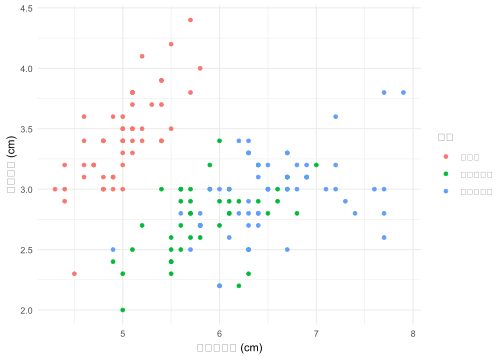

コード
1+1[1] 2坂本航太
2025年6月15日
2025年6月15日
R Quartoでは、Markdownを使って文書を作成し、Rコードと組み合わせて美しいレポートや論文を生成できます。本記事では、Quarto環境で効果的に使えるMarkdown記法を体系的に解説します。
Markdownは、プレーンテキストで記述した文書を構造化された文書に変換するためのマークアップ言語です。R Quartoでは、このMarkdownとRコードを組み合わせて、データ分析レポートや学術論文を作成できます。
可読性が高い：マークアップが最小限で、プレーンテキストでも内容が理解しやすい
学習コストが低い：基本的な記法は数時間で習得可能
Quartoとの親和性：Rコードチャンクとシームレスに統合
多様な出力形式：HTML、PDF、Word、PowerPointなど
コードを美しく表示するには、バッククオート3つ（```）でコードを囲みます。 これだけだとSAS/Rに限らず、プログラムは実行はされないが、サンプルとして提示する際に便利である。
# Rコードの例
library(ggplot2)
library(dplyr)
# データの読み込みと前処理
data <- mtcars %>%
mutate(efficiency = ifelse(mpg > 20, "High", "Low"))
# 散布図の作成
ggplot(data, aes(x = wt, y = mpg, color = efficiency)) +
geom_point(size = 3) +
geom_smooth(method = "lm") +
labs(title = "車重と燃費の関係",
x = "車重 (1000 lbs)",
y = "燃費 (mpg)")QuartoでRプログラムも実行させたい場合は以下のように記載する。なお、SASは実行させない前提とする。 なお、SASの設定環境をQuartoに構築したらSASも実行可能である。
プログラムも実行させるには、バッククオート3つ（```）でコードを囲み、{r}と書く。そうすると、Rプログラムの実行できる。
オプションとしてRプログラムを非表示にしたり、表や図を表示する際は、2つの図表を横に並べたりとオプションは様々ある。それらは、こちらのブログを参考にしていただきたい。デフォルトではプログラムが表示されてしまうので、非表示にする場合は、
Quartoでの頻用するであろうオプション記法：
#| eval: true実行制御：このコードを実際に実行するかを指定
true：コードを実行する（デフォルト）
false：コードを実行せず、表示のみ
#| output: asis出力形式：コードの実行結果をそのまま（as-is）出力
通常はコードの出力結果が整形されますが、asisでは生の形式で出力
HTMLタグやMarkdown記法をそのまま文書に挿入したい場合に使用
#| code-fold: trueコード表示制御：コードブロックを折りたたみ状態で表示する
true：コードを折りたたんで、クリック可能なボタンで展開
false：コードを通常通り表示（デフォルト）
読者が必要に応じてコードの詳細を確認できる柔軟性を提供
#| code-summary: "データ処理コードを表示"折りたたみボタンのラベル：折りたたまれたコードを展開するボタンのテキストを設定
デフォルトでは「Show code」や「コードを表示」が表示される
カスタムテキストで、そのコードブロックの内容を説明できる
絵文字や詳細な説明文を使用して、読みやすさを向上させる
以下のプログラムを回すと、その下の結果が得らえる。プログラムが表示されないので結果だけを提示する際には有用である。
#| eval: true
#| output: asis
#| code-fold: true
#| code-summary: "Show Code"
1 + 1[1] 2
本文中にRの結果を直接入れることができます！これをインラインコードと呼びます。 “r 引数”で本文中に簡単にRの出力結果を入れることができる。これは論文作成の文章案を作成するときに便利であろう。
以下のように書くことでできます。普通はRチャンクで計算したものを引用するのがよいだろう。
年齢の平均は r mean(mtcars$mpg) です。
サンプルサイズは r nrow(mtcars) でした。
最大値は r max(mtcars$hp) 馬力です。年齢の平均は 20.090625 です。 サンプルサイズは 32 でした。 最大値は 335 馬力です。
ここで、上で事前にRチャンクで計算をしておく。今回は練習のためプログラムを表示しているが、Rプログラムを非表示にしてもよいだろう。記載としては以下のように書けばよい。
上記のように書くとこのように出力できる。
本研究では 32 台の自動車を分析しました。
燃費の平均は 20.1mpg（標準偏差 = 6.03）でした。
Markdownにおける改行はやや特殊だ。特殊といっても難しいことはない。普段よりもう一行改行するだけだ。Markdownの場合、1回の改行は改行として判定されず、同じ行の連続と認識する。結構難しい。
文章1 文章2
文章1
文章2
Webページを作成する際、ブラウザが理解できる言語がHTMLです。例えば、ブログ記事でリンクを作成したい場合、HTMLでは以下のように記述します：文章中に簡単にURLを参照できます。
例：私のブログ
[私のブログ](https://example-blog.com)また、以下のように{}内に.externalを付けると、リンクのテキストの右側にアイコンを付く。
[私のブログ](https://example-blog.com){.external target="_blank"}例：私のブログ
文章中でコードや関数名を表示する場合は、バッククオート1つで囲みます。単純にかっこいい。
例：ggplot()関数やdplyr::filter()を使用してデータを処理します。平均値はmean()で計算できます。
見出しは#の数で階層を表現します。学術文書では、適切な階層構造が重要です。 ちなみに#は6つまで使える。
# 1. はじめに（H1）
## 1.1 研究背景（H2）
### 1.1.1 先行研究（H3）
#### データの特徴（H4）
##### 変数の詳細（H5）
###### 補足事項（H6）重要な結果：**重要な結果**
統計的有意：*統計的有意*
仮説は棄却：~~仮説は棄却~~
アンダーライン：アンダーラインはHTMLタグを使う。
`-`を書いて、blankを入れるだけで順序なしリストができます。
- データ収集
- アンケート調査
- 実験データ
- 公開データセット
- データ前処理
- 欠損値処理
- 外れ値検出
- 変数変換
- 分析手法
- 記述統計
- 回帰分析
- 機械学習結果：
データ収集
アンケート調査
実験データ
公開データセット
データ前処理
欠損値処理
外れ値検出
変数変換
分析手法
記述統計
回帰分析
機械学習
普通に1.みたいにかけばよいだけ。単純。.の付け忘れに注意しよう！
1. 研究目的の設定
2. データ収集計画の策定
1. サンプルサイズの決定
2. 測定項目の選択
3. 倫理的配慮
3. データ収集の実施
4. 統計解析
5. 結果の解釈
6. 考察と結論Quartoで画像を入れるにはと入力します。[代替テキスト]は画像を読み込めなかった場合のテキストを意味します。これは画像が読み込めなかった場合の代替テキストでもあるが、視覚障害者用のウェブブラウザーのためにも使われる。これらのウェブブラウザーはテキストのみ出力されるものが多く、画像の代わりには代替テキストが読み込まれる。
例えば、Figsフォルダー内のex.pngというファイルを読み込むとしたら以下のように書く。
相対パス（推奨）が最も一般的で推奨される方法です。Quartoファイル（.qmd）からの相対位置で指定します。以下のように結果の図を記載するのが楽であろう。絶対パスでも可能であるが、あまりお勧めはできない。
#相対パス


#絶対パス

脚注は[^固有識別子]と[^固有識別子]: 脚注内容の2つの要素が必要だ。まず、文末脚注を入れる箇所に[^xxxx]を挿入する。xxxxは任意の文字列で構わない。しかし、同じQuarto文書内においてこの識別子は被らないようにすること。実際の脚注の内容は[^xxxx]: 内容のように入力する。これはどこに位置しても構わない。文書の途中でも、最後に入れても、脚注の内容は文末に位置する。ただし、脚注を入れる段落のすぐ後の方が作成する側としては読みやすいだろう。
統計的有意性[^1]は重要な概念ですが、効果量[^2]も同様に考慮すべきです。
[^1]: p値が設定した有意水準（通常0.05）を下回ること。
[^2]: 統計的有意性とは独立した、実際的な重要性を示す指標。テーブルを自分で書くことはないと思う。生成AIに書いてもらおう。Rでもkableを使えば出てくる。
| 変数名 | データ型 | 欠損値 | 説明 |
|:-------|:---------|:------:|:-----|
| age | numeric | 0 | 年齢（歳） |
| gender | factor | 2 | 性別（M/F） |
| income | numeric | 15 | 年収（万円） |
| education | factor | 3 | 教育レベル |結果：
| 変数名 | データ型 | 欠損値 | 説明 |
|---|---|---|---|
| age | numeric | 0 | 年齢（歳） |
| gender | factor | 2 | 性別（M/F） |
| income | numeric | 15 | 年収（万円） |
| education | factor | 3 | 教育レベル |
Rでの例
| mpg | cyl | disp | hp | drat | wt | qsec | vs | am | gear | carb | |
|---|---|---|---|---|---|---|---|---|---|---|---|
| Mazda RX4 | 21.0 | 6 | 160 | 110 | 3.90 | 2.620 | 16.46 | 0 | 1 | 4 | 4 |
| Mazda RX4 Wag | 21.0 | 6 | 160 | 110 | 3.90 | 2.875 | 17.02 | 0 | 1 | 4 | 4 |
| Datsun 710 | 22.8 | 4 | 108 | 93 | 3.85 | 2.320 | 18.61 | 1 | 1 | 4 | 1 |
| Hornet 4 Drive | 21.4 | 6 | 258 | 110 | 3.08 | 3.215 | 19.44 | 1 | 0 | 3 | 1 |
| Hornet Sportabout | 18.7 | 8 | 360 | 175 | 3.15 | 3.440 | 17.02 | 0 | 0 | 3 | 2 |
| Valiant | 18.1 | 6 | 225 | 105 | 2.76 | 3.460 | 20.22 | 1 | 0 | 3 | 1 |
> 統計学における最も重要な概念の一つは、
> サンプルから母集団について推論を行うことである。
> この過程では、不確実性を適切に評価することが不可欠である。
>
> > データは語るが、解釈は人間が行うものである。結果：
統計学における最も重要な概念の一つは、 サンプルから母集団について推論を行うことである。 この過程では、不確実性を適切に評価することが不可欠である。
データは語るが、解釈は人間が行うものである。
GFMは数式に対応していないが、$数式$でインライン数式を埋め込むことができる。Quartoの数式はMathJaxと呼ばれるJavaScriptのライブラリによってレンダリングされる。このMathJaxライブラリはHTMLにデフォルトで埋め込まれるわけではではないため、インターネットに接続せずにHTMLファイルを開くと数式が正しく出力されないため、インターネット接続を忘れないこと。MathJaxの記法は とほぼ変わらない。Texでの数式の書き方は別途まとめる。
回帰係数は $\beta_1 = 0.73$ で統計的に有意でした（$p < 0.001$）。 決定係数は $R^2 = 0.85$ でした。表示は以下の通り。
回帰係数は \beta_1 = 0.73 で統計的に有意でした（p < 0.001）。 決定係数は R^2 = 0.85 でした。
数式を独立した行として出力する場合は、の代わりに$を使用する。
$$
y_i \sim \mbox{Normal}(X \beta, \sigma).
$$y_i \sim \mbox{Normal}(X \beta, \sigma).
もし数式が複数の行で構成されている場合は$$内にaligned環境（\begin{aligned}〜\end{aligned}）を使用する。むろん、 Latexと記法は同じだ。
\begin{align}
Y_i &= \beta_0 + \beta_1 X_{1i} + \beta_2 X_{2i} + \epsilon_i \\
\epsilon_i &\sim N(0, \sigma^2) \\
\hat{\beta}_1 &= \frac{\sum_{i=1}^{n}(X_i - \bar{X})(Y_i - \bar{Y})}{\sum_{i=1}^{n}(X_i - \bar{X})^2}
\end{align}複数の行にわたる数式の書き方
\begin{aligned} Y_i & \sim \text{Bernoulli}(\theta_i), \\ \theta_i & = \text{logit}^{-1}(y_i^*), \\ y_i^* & = \beta_0 + \beta_1 x_1 + \beta_2 z_1. \end{aligned}
Rの場合、#でコメントを付けられるように、Quartoでもコメントを付けることができる。とりあえず書いたが要らなくなった段落や文章があって、消すことがもったいない場合はコメントアウトするのも1つの方法だろう。ただし、Rのように#は使えない。なぜなら#は見出しを意味する体。QuartoのコメントはHTMLと同様、で囲まれた領域がコメント扱いとなり、レンダリングに影響を与えない。
例
文章1
<!--
ここはコメントです。
-->
文章2Quartoを使う意義 以上の内容まで抑えると、Quartoを使って、簡単な文法のみで構造化された文書が作成できるでしょう。しかし、これまでの内容はQuartoの良さではなく、Markdownの良さです。別にQuartoでなくても、TyporaやGhostwriterのようなMarkdownエディターを使えば良いでしょう。Quartoを使う真の意義は、文章とコード、結果が統合されることです。それではQuarto文書にRコードを入れる方法について解説します。 チャンク（Chunk） Quarto文書にRコードを入れる方法は2つあります：
チャンク内のRコードは独立した段落にコードと結果が両方出力されます。一方、インラインコードは文中に結果のみ出力されます。
チャンクが始まるとの宣言は {r}、終わるとの宣言は です。つまり、{r} と ちょんちょんの間にRコードを入れるだけです。前の方にも書きました。
“Hello World!”を出力するコード
インラインコードの基本概念 他にもインラインコードを使って文中にRコードを埋め込むことも可能です。ただし、Rコードは出力されず、結果のみが出力されます。例えば、ベクトル X <- c(2, 3, 5, 7, 12) があり、この平均値を文中で示したいとしましょう。むろん、文中に「5.8」と直接書いても問題ありません。しかし、Xの入力ミスが見つかり、実は c(2, 3, 5, 7, 11) になったらどうでしょうか。この「5.8」と書いた箇所を見つけて「5.6」と修正しなければいけません。これは非常に面倒な作業であり、ミスも起こりやすいです。絶対やめましょう。
文中に mean(X) の結果を埋め込めるならこういったミスを未然に防ぐことができ、文書のメンテナンスも楽になるでしょう。インラインコードの記法文中でRコードを入れるためには r と ` の間にRコードを入力すれば良いです。
こうかけばいいのです。
出力は以下
mean(X)の実行結果：5.6
コードスパンとインラインコードの違い mean(X) のように r でなく、単に `` だけで囲まれたコードは実行されません。文中に短いコードを入れたり、オブジェクト名を表記する際などに使う機能です。つまり、
`コード` = コードを文字として見せるだけ`R コード` = コードを実行して結果を表示 （r コード）オプションの基本構文
ここではチャンクに指定可能なオプションについて紹介します。実際は本記事で紹介する内容の十数倍のオプションが用意されていますが、あまりにも膨大すぎるため、ここではよく使う機能のみを紹介します。 チャンクオプションはチャンク内の最上段に #| 仮引数: 実引数 のように表記します。 基本例：
eval は true か false の値が指定できます。evalは「コードを実行するかどうか」を決めるオプションです。
チャンク名は #| label: チャンク名 で指定します。これはチャンクに名前を付けるオプションですが、多くの場合分析に影響を与えることはありません（それでもチャンク名は指定することを強く推奨します）。
ラベルの例は以下の通り。
このチャンク名が重要となるのは cache オプションを付ける場合です。
cache オプションは処理結果を保存しておくことを意味します。チャンク内のコードはrenderする度に計算されますが、演算にかなりの時間を必要とするコードが含まれている場合、renderの時間も長くなります。
時間のかかる処理cache: true オプションを付けておくと、最初のrender時に結果を別途のファイルとして保存しておき、次回からはその結果を読み込むだけとなります。基本的にはこのオプションはおすすめしない。
次は「コードだけ見せたい」、「結果だけ見せたい」場合に使うオプションを紹介します。これは技術書、授業用資料、スライドでよく使う機能です。
| オプション | 説明 | デフォルト値 |
|---|---|---|
echo |
コードの出力有無 | true |
eval |
コードの実行有無 | true |
include |
コードと結果両方の表示有無 | true |
コードのみ出力（実行なし）：
結果のみ出力（コード非表示）：
Sepal.Length Sepal.Width Petal.Length Petal.Width
Min. :4.300 Min. :2.000 Min. :1.000 Min. :0.100
1st Qu.:5.100 1st Qu.:2.800 1st Qu.:1.600 1st Qu.:0.300
Median :5.800 Median :3.000 Median :4.350 Median :1.300
Mean :5.843 Mean :3.057 Mean :3.758 Mean :1.199
3rd Qu.:6.400 3rd Qu.:3.300 3rd Qu.:5.100 3rd Qu.:1.800
Max. :7.900 Max. :4.400 Max. :6.900 Max. :2.500
Species
setosa :50
versicolor:50
virginica :50
コードと結果を両方隠す：
パッケージの読み込みコードやメタ変数の作成の際に include: false は有用なオプションです。
既に見てきた通り、Quartoは作図の結果も出力してくれます。図のサイズや解像度を変えることもできます。
| オプション名 | 説明 | 値の例 |
|---|---|---|
fig-height |
図の高さ（インチ） | 数値 |
fig-width |
図の幅（インチ） | 数値 |
fig-align |
図の位置 | “left”, “center”, “right” |
fig-cap |
図のキャプション | 文字列 |
dpi |
図の解像度（印刷用なら300以上を推奨） | 数値 |

irisデータセットの可視化自分だけが見るコードなら別に推奨されない書き方でも問題ないかもしれませんが、Quarto文書は他人と共有するケースが多いため、読みやすいコードを書くのも大事でしょう。
ここで便利なオプションが tidy オプションです。tidy: true を加えると、自動的にコードを読みやすい形に調整してくれます。
tidy: false（デフォルト）の場合：
tidy: TRUEの場合： Quarto文書は他人と共有するケースが多いため、読みやすいコードを書くのも大事だろう。ここで便利なオプションがtidyオプションだ。tidy: trueを加えると、自動的にコードを読みやすい形に調整してくれる。たとえば、以下のコードは字下げもなく、スペースもほとんど入れていないダメなコードだが、tidy: trueを付けた場合と付けなかった場合の出力結果の違いを見てみよう。tidy: trueを付けただけで、読みやすいコードになった。ちなみにtidyオプションを使うためには事前に{formatR}パッケージをインストールしておく必要がある。ただし、{formatR}パッケージはQuarto文書内にて読み込んでおく必要はない。また、{formatR}パッケージは万能ではないため、普段から読みやすいコードを書くように心がけよう。
R Quartoでのデータ分析レポート作成において、Markdownの適切な使用は以下のメリットをもたらします：
構造化された文書：見出しとセクションで論理的な流れを作成
美しい数式表示：LaTeX記法による専門的な数式表現
効果的な表現：テーブル、リスト、引用による情報整理
再現可能性：コードと文章の統合による透明性の確保
これらの記法を活用して、読みやすく、理解しやすいデータ分析レポートを作成しましょう。